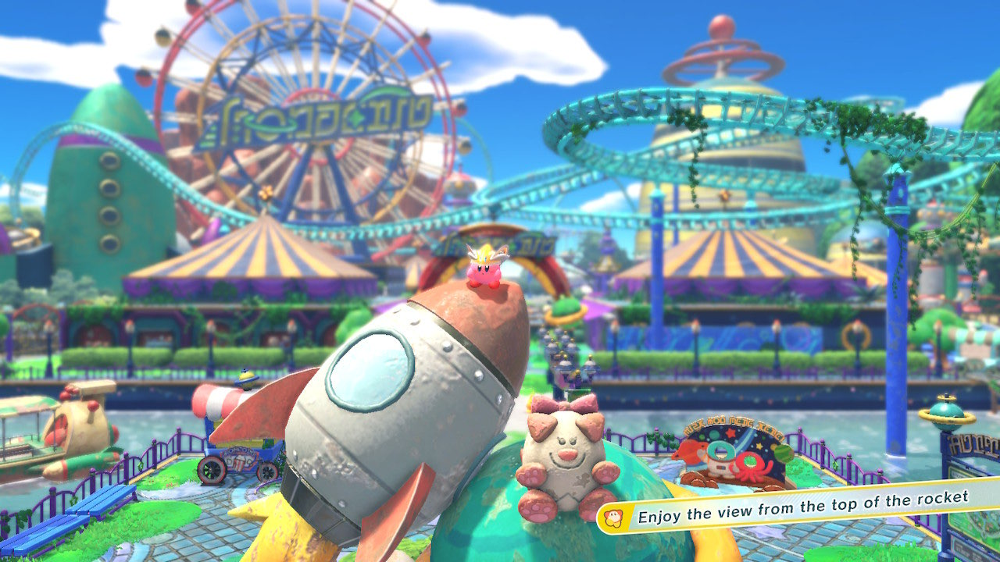

Homepage
Wie ben ik?
Ik ben Joppe Alders, ik zit op het Metis en doe hier coderclass. Programmeur worden - of iets in die richting -
lijkt me leuk en vind Python daarbij passend ook leuk om in te werken. Ik hou van gamen en doe het met een passie.
Nintendo maakt nog steeds de beste games.
De foto
Heb je enig idee waarvan de foto is die je meteen ziet? Ik zal wat hints geven misschien kan je er daarmee achterkomen.
Gebruik je eigen regels, want als je het makkelijk maakt dan doe je het toch niet voor een goede reden. En voordat ik het vergeet, hieronder heb je nog een afbeelding om je te helpen.
- Het hoofdpersoon is ergens waar die nooit eerder is geweest
- Vlinders spelen een grote rol in dit spel
- De game is niet gemaakt door Nintendo, maar wel door hun gepublished/-publiseerd
- Je kan een trap worden in dit spel.
- Het is de eerste (echte) 3d game in de franchise.
Ik hoop dat het lukt! (Zo moeilijk is het niet met google, wat ik aanraad want zonder is vergeten tijd.)

Het antwoord is Kirby & the Forgotten Land. De fotos zijn van 'The Battle of the Blizzard Bridge' en 'Welcome to Wondaria'